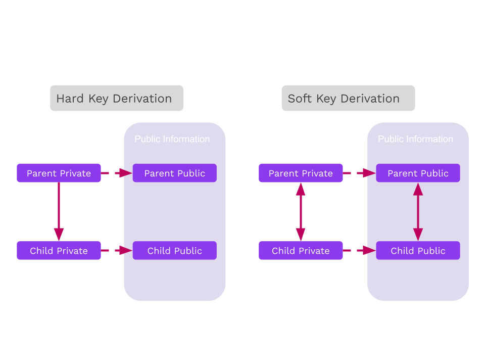

<!DOCTYPE html>
<html lang="en">

<head>
  <meta charset="utf-8" />
  <meta name="viewport" content="width=device-width, initial-scale=1.0, maximum-scale=1.0, user-scalable=no" />

  <title>Addresses and Keys</title>
  <link rel="shortcut icon" href="./../../assets/favicon.ico" />
  <link rel="stylesheet" href="./../../dist/reset.css" />
  <link rel="stylesheet" href="./../../dist/reveal.css" />
  <link rel="stylesheet" href="./../../assets/styles/PBA-theme.css" id="theme" />
  <link rel="stylesheet" href="./../../css/highlight/shades-of-purple.css" />

  <link rel="stylesheet" href="./../.././assets/styles/custom-classes.css" />

</head>

<body class="site">
  <header class="site-header">
    <!-- This logo is a link only on the watching server, not the production build -->
    <a href="">
      
    </a>
  </header>
  <main class="reveal">
    <article class="slides">
      <section  data-markdown><script type="text/template">

# Addresses and Keys
</script></section><section  data-markdown><script type="text/template">
# Outline

<pba-flex center>

1. Binary Formats
1. Seed Creation
1. Hierarchical Deterministic Key Derivation

</pba-flex>
</script></section><section  data-markdown><script type="text/template">
## Binary Display Formats

When representing binary data, there are a few different display formats you should be familiar with.

Hex: 0-9, a-f

Base64: A-Z, a-z, 0-9, +, /

Base58: Base64 without 0/O, I/l, +, and /

<aside class="notes"><p>Be very clear that this is a display format that we use to <em>transmit binary data through text</em>. The same data can be encoded with any of these formats, it&#39;s just important to know which one you&#39;re using to decode. Data is not typically stored in these formats unless it has to be transmitted through text.</p>
</aside></script></section><section  data-markdown><script type="text/template">
## Binary Display Formats Example

Every hex character is 4 bits.</br>
Every base64 character is 6 bits.</br>
base58 characters are usually _about_ 6 bits.</br>

```text
binary: 10011111 00001010 10011110 10011000 01001100 11010011 10110010 00000101
hex:    9   f    0   a    9   e    9   8    4    c   d   3    b   2    0   5
base64: n     w      q      e      m     E      z      T      s     g      U=
base58: T     b      u      H      z     e      3      c      t     k      c

hex:    9f0a9e984cd3b205
base64: nwqemEzTsgU=
base58: TbuHze3ctkc
```

<aside class="notes"><p>It turns out that converting from hex/base64 to base58 can in theory take n^2 time!</p>
</aside></script></section><section  data-markdown><script type="text/template">
# Mnemonics and Seed Creation

<aside class="notes"><p>These are all different <em>representation</em> of a secret. Fundamentally doesn&#39;t really change anything.</p>
</aside></script></section><section  data-markdown><script type="text/template">
## Seeds are secrets

Recall, both symmetric and asymmetric cryptography require a secret.
</script></section><section  data-markdown><script type="text/template">
## Mnemonics

Many wallets use a dictionary of words and give people phrases,<br/>often 12 or 24 words, as these are easier to back up/recover than byte arrays.

<aside class="notes"><p>High entropy needed.
People are <em>bad</em> at being random.
Some people create their own phrases... this is usually stupid.</p>
</aside></script></section><section  data-markdown><script type="text/template">
## Dictionaries

<pba-cols>
<pba-col>

There are some standard dictionaries to define which words (and character sets) are included in the generation of a phrase. Substrate uses the dictionary from BIP39.

</pba-col>
<pba-col>

| No. | word    |
| --- | ------- |
| 1   | abandon |
| 2   | ability |
| 3   | able    |
| 4   | about   |
| 5   | above   |

<pba-flex style="font-size: .6em;" center>

_The first 5 words of the [BIP39 English dictionary](https://github.com/bitcoin/bips/blob/master/bip-0039/english.txt)_

</pba-col>
</pba-cols>
</script></section><section  data-markdown><script type="text/template">
## Mnemonic to Secret Key

Of course, the secret key is a point on an elliptic curve, not a phrase.

BIP39 applies 2,048 rounds of the SHA-512 hash function<br/>to the mnemonic to derive a 64 byte key.

Substrate uses the entropy byte array from the mnemonic.
</script></section><section  data-markdown><script type="text/template">
## Portability

Different key derivation functions affect the ability to use the same mnemonic in multiple wallets as different wallets may use different functions to derive the secret from the mnemonic.
</script></section><section  data-markdown><script type="text/template">
## Cryptography Types

Generally, you will encounter 3 different modern types of cryptography across most systems you use.

- Ed25519
- Sr25519
- ECDSA

We will go more in depth in future lectures!

<aside class="notes"><p>You may have learned RSA in school. It is outdated now, and requires <em>huge</em> keys.</p>
</aside></script></section><section  data-markdown><script type="text/template">
## What is an address?

An address is a representation of a public key, potentially with additional contextual information.

<aside class="notes"><p>Having an address for a symmetric cryptography doesn&#39;t actually make any sense, because there is no
public information about a symmetric key.</p>
</aside></script></section><section  data-markdown><script type="text/template">
## Address Formats

Addresses often include a checksum so that a typo cannot change one valid address to another.

```text
Valid address:   5GEkFD1WxzmfasT7yMUERDprkEueFEDrSojE3ajwxXvfYYaF
Invalid address: 5GEkFD1WxzmfasT7yMUERDprk3ueFEDrSojE3ajwxXvfYYaF
                                          ^
                                          E changed to 3
```

<aside class="notes"><p>It hasn&#39;t been covered yet, but some addresses even go <em>extra fancy</em> and include an error correcting code in the address.</p>
</aside></script></section><section  data-markdown><script type="text/template">
## SS58 Address Format

SS58 is the format used in Substrate.

It is base58 encoded, and includes a checksum and some context information.
Almost always, it is 2 bytes of context and 2 bytes of checksum.

```text
base58Encode( context | public key | checksum )
```

<aside class="notes"><p><code>|</code> here stands for concatenation.</p>
<p>For ECDSA, the public key is 33 bytes, so we use the hash of it in place of the public key.</p>
<p>There are a lot more variants here, but this is by far the most common one.</p>
<p><a href="https://docs.substrate.io/reference/address-formats/">reference</a></p>
</aside></script></section><section  data-markdown><script type="text/template">
## HDKD

Hierarchical Deterministic Key Derivation


</script></section><section  data-markdown><script type="text/template">
## Hard vs. Soft

Key derivation allows one to derive (virtually limitless)<br/>child keys from one "parent".

Derivations can either be "hard" or "soft".
</script></section><section  data-markdown><script type="text/template">
## Hard vs. Soft


</script></section><section  data-markdown><script type="text/template">
## Hard Derivation

Hard derivation requires the secret key and derives new child secret keys.

Typical "operational security" usages should favor hard derivation over soft derivation because hard derivations avoid leaking the sibling keys, unless the original secret is compromised.

Always do hard paths first, then conclude in soft paths.
</script></section><section  data-markdown><script type="text/template">
## Hard Derivation in Wallets

Wallets can derive keys for use in different consensus systems while only needing to back up one secret plus a pattern for child derivation.


</script></section><section  data-markdown><script type="text/template">
## Hard Derivation in Wallets

Let's imagine we want to use this key on multiple networks, but we don't want the public keys to be connected to each other.


</script></section><section  data-markdown><script type="text/template">
<!-- .slide: data-background-color="#4A2439" -->

# Subkey Demo

## Hard Derivation

<aside class="notes"><p>Hard keys: Take a <em>path</em> (data like a name/index), concatenate with the original key, and hash it for a new key.
They reveal nothing about keys above them, and only with the <em>path</em> between it and children could they be recovered.</p>
</aside></script></section><section  data-markdown><script type="text/template">
## Soft Derivation

Soft derivation allows one to create derived addresses from only the public key.
Contrary to hard derivation, _all_ keys are related.

<aside class="notes"><ul>
<li>With any key and the paths to children and. or parents, the public <em>and</em> private keys can be recovered.</li>
<li>Soft derivations can break some niche advanced protocols, but our sr25519 crate avoids supporting protocols that conflict with soft derivations.</li>
</ul>
</aside></script></section><section  data-markdown><script type="text/template">
## Soft Derivation

- Note that these generate new addresses, but use the same secret seed.
- We can also use the same paths, but only using the Account ID from `//polkadot`. It generates the same addresses!
</script></section><section  data-markdown><script type="text/template">
## Soft Derivation in Wallets

Wallets can use soft derivation to link all payments controlled by a single private key, without the need to expose the private key for the address derivation.

**Use case:** _A business wants to generate a new address for each payment, but should be able to automatically give customers an address without the secret key owner deriving a new child._

<aside class="notes"><p>On the use case, taking each payment at a different address could help make the association between payment and customer.</p>
<p>See: <a href="https://wiki.polkadot.network/docs/learn-accounts#soft-vs-hard-derivation">https://wiki.polkadot.network/docs/learn-accounts#soft-vs-hard-derivation</a></p>
</aside></script></section><section  data-markdown><script type="text/template">
<!-- .slide: data-background-color="#4A2439" -->

# Subkey Demo

## Soft Derivation

<aside class="notes"><p>See the Jupyter notebook and/or HackMD cheat sheet for this lesson.</p>
<p>Mention that these derivations create entirely new secret seeds.</p>
</aside></script></section><section  data-markdown><script type="text/template">
<!-- .slide: data-background-color="#4A2439" -->

# Questions
</script></section>
    </article>
  </main>

  <script src="./../../dist/reveal.js"></script>

  <script src="./../../plugin/markdown/markdown.js"></script>
  <script src="./../../plugin/highlight/highlight.js"></script>
  <script src="./../../plugin/zoom/zoom.js"></script>
  <script src="./../../plugin/notes/notes.js"></script>
  <script src="./../../plugin/math/math.js"></script>

  <script src="./../../assets/plugin/mermaid.js"></script>
  <script src="./../../assets/plugin/mermaid-theme.js"></script>

  <script src="./../../assets/plugin/chart/chart.js"></script>
  <script src="./../../assets/plugin/chart/chart.min.js"></script>

  <script src="./../../assets/plugin/tailwindcss.min.js"></script>

  <script>
    function extend() {
      var target = {};
      for (var i = 0; i < arguments.length; i++) {
        var source = arguments[i];
        for (var key in source) {
          if (source.hasOwnProperty(key)) {
            target[key] = source[key];
          }
        }
      }
      return target;
    }

    // default options to init reveal.js
    var defaultOptions = {
      controls: true,
      progress: true,
      history: true,
      center: true,
      transition: 'default', // none/fade/slide/convex/concave/zoom
      slideNumber: true,
      mermaid: {
        startOnLoad: false,
        logLevel: 3,
        theme: 'base',
        themeVariables: {
          primaryColor: purple,
          primaryTextColor: white,
          primaryBorderColor: pink,
          lineColor: pink,
          secondaryColor: lightPurple,
          tertiaryColor: lightPurple,
        },
      },
      chart: {
        defaults: {
          color: 'lightgray', // color of labels
          scale: {
            beginAtZero: true,
            ticks: { stepSize: 1 },
            grid: { color: "lightgray" }, // color of grid lines
          },
        },
        line: { borderColor: ["#ccc", "#E6007A", "#6D3AEE"], "borderDash": [[5, 10], [0, 0]] },
        bar: { backgroundColor: ["#ccc", "#E6007A", "#6D3AEE"] },
      },
      plugins: [
        RevealMarkdown,
        RevealHighlight,
        RevealZoom,
        RevealNotes,
        RevealMath,
        RevealMermaid,
        RevealChart
      ]
    };

    // options from URL query string
    var queryOptions = Reveal().getQueryHash() || {};

    var options = extend(defaultOptions, {"width":1400,"height":900,"margin":0,"minScale":0.2,"maxScale":2,"transition":"none","controls":true,"progress":true,"center":true,"slideNumber":true,"backgroundTransition":"fade"}, queryOptions);
  </script>


  <script>
    Reveal.initialize(options);
  </script>
</body>

</html>